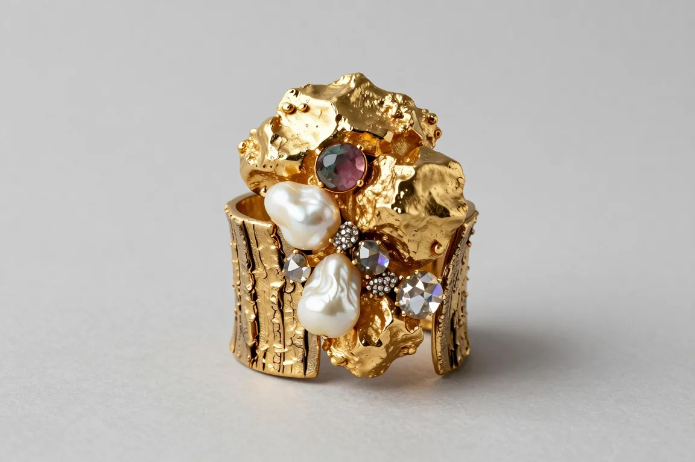

fashion · 1960–1979 · also: Textured gold jewellery, 1960s British studio jewellery, Nugget and uncut-stone jewels
Rough, heavy jewels of textured gold and silver that look cast from rock or bark. They are set with uncut crystals and raw stones, and were made in London from the 1960s.

Core thesis
A jewel is a raw object: a rough surface and an uncut stone show the real material and refuse the polish of the old shop.
Design principles
Give the metal a rough, deep texture, as if it came from rock, bark or coral. Make it with a torch, a hammer or a cast.
Use a thick piece of metal, at least 1.5 mm thick, and keep the mass heavy and clear.
Set uncut or rough stones: tourmaline, citrine, quartz crystal and baroque pearl, with the natural faces left on.
Make the form irregular and asymmetrical, as a natural lump, with no repeat.
Use yellow gold with a dull surface in the recesses and a bright surface on the high points.
Choose a material for its honesty: let the cast, the weld and the hammer show.
Make each piece unique, and sign it with a stamp on the back.
Design the piece as a large object on the body: a cuff, a ring or a brooch of 5 to 8 cm.